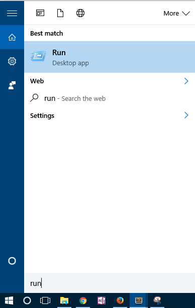
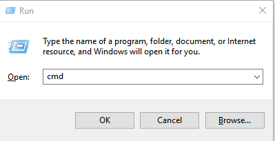
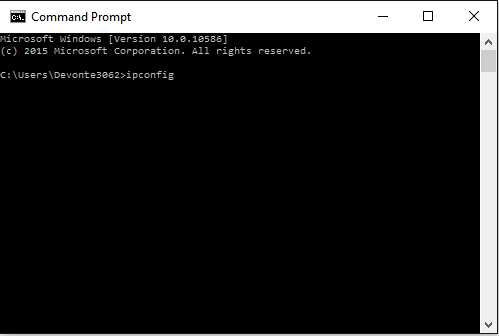
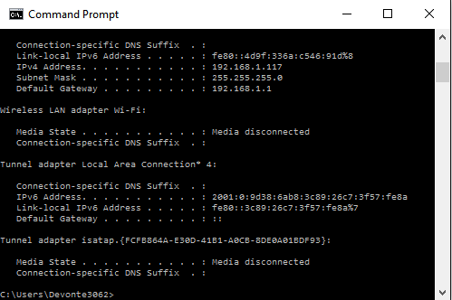

Step 1
To begin, bring up your start menu by pressing the Windows key
Step 2
Navigate to "Run", once found click it and wait for the window to open.

Step 3
When "Run" opens type cmd where the "Open" prompt is and click okay, or press the enter key

Step 4
When the command prompt opens type the command "ipconfig" then press the enter key

Step 5
The command should bring up Windows IP Configuration in the command prompt. Scroll to find the network adaptor you are using whether it is Wireless or Wired. When you find this simply find the line that says "IPv4 Address" and you have found your current IP address.

Congratulations! You have found your IP Address using the command line!